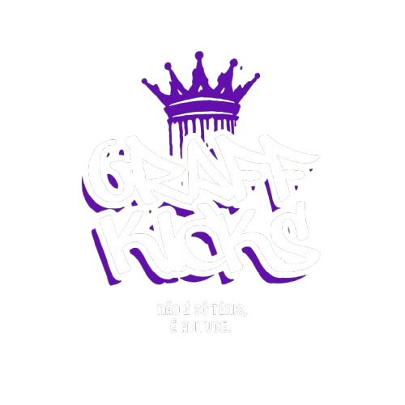

A GraffKicks foi criada por alunos do E.E. Nyrce Vila Verde em função do trabalho de conclusão de curso do 2EMTI4 de 2026.
Nosso objetivo é incorporar a cultura das ruas trazendo grafites e pichações para os nossos produtos.
A GraffKicks foi criada por alunos do E.E. Nyrce Vila Verde em função do trabalho de conclusão de curso do 2EMTI4 de 2026.
Nosso objetivo é incorporar a cultura das ruas trazendo grafites e pichações para os nossos produtos.

Expandir a GraffKicks mundialmente para que todos possam conhecer a cultura das ruas. O objetivo é ultilizar a arte como forma de comunicação e expressão, transmitindo mensagem para a sociedade.
A nossa visão de futuro é conquistar cada vez mais reconhecimento como uma forma importante de arte e expressão cultural. Conquistando respeito e mostrando que a arte urbana pode transformar não apenas as cidades.